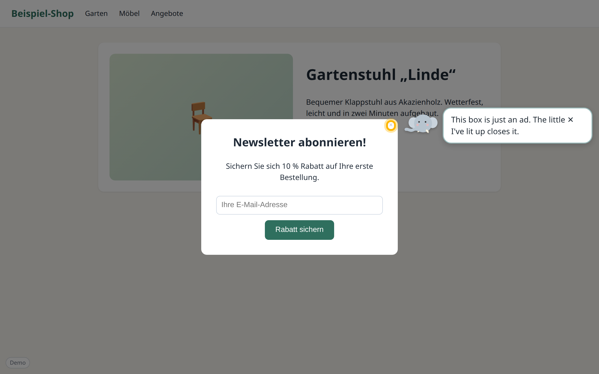
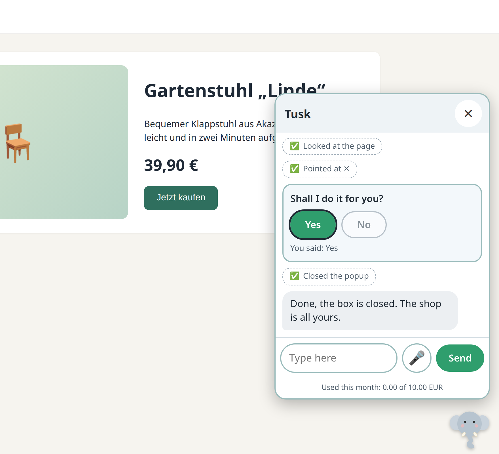

Little Tusk
A friendly little elephant that helps seniors, and anyone who finds the web confusing. Tusk lives in the corner of every page. When you are stuck on something silly, such as a popup that will not close or a cookie banner, it walks over, points at the right thing and explains in plain words. If you want, it does the clicking for you.

Safe by design
Tusk asks before anything that cannot be undone, never sees your passwords, never downloads files and warns about scams. Everything stays in your browser. Speech is understood on your computer. Only the model provider you choose is contacted, and a monthly spending limit is enforced.
English, Deutsch, Español and English (India).
How to get it (for now)
- Download the extension from github.com/thejeswi/littletusk and build it (
npm install, thennpm run build). - In Chrome open
chrome://extensionsand switch on "Developer mode". - Click "Load unpacked" and choose the
distfolder.
Setting it up for someone else?
Make a setup link and send it by email. The link opens Little Tusk on their computer and asks them to confirm. The key travels in the part of the link after the #, which never reaches a server. Use a key with a spending limit and delete the email afterwards.
